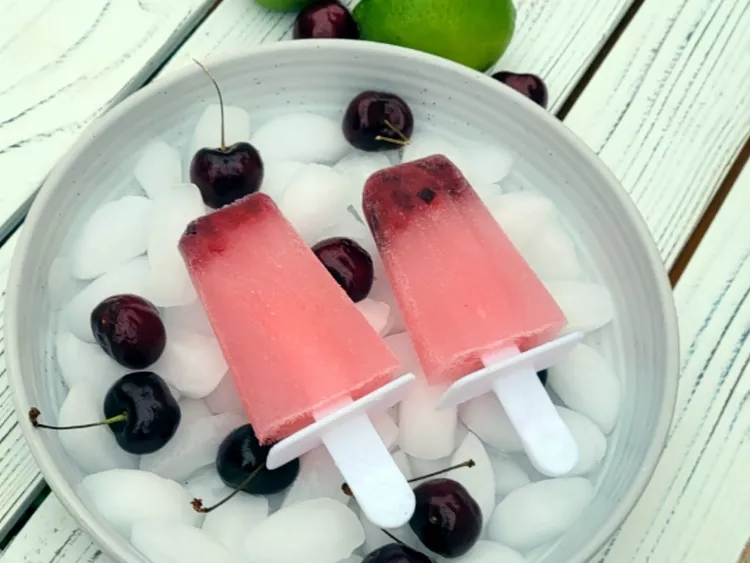

Cherry Limeade Vodka Popsicles - recipe
Ingredients:
- 2 cups limeade
- 1 cup cherry vodka
- 1/4 cup finely chopped fresh cherries
Directions
- Stir together limeade, cherry vodka, and cherries.
- Pour into ice pop molds and freeze until firm, about 4 hours.